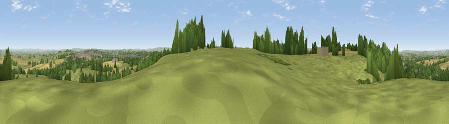

Viewpoint near Odcombe
#14944 in England · top 33% of its area beats it · near Odcombe · path 141 mWhere it is
The exact computed spot (ST 50475 16175). Click the marker for map links.
Public access: the nearest public right of way is about 141 m away — the final stretch may cross private land. Computed from Natural England's CRoW access layer and OpenStreetMap rights of way — not the legal definitive map. Always verify locally.
The view, rendered

A 360° render of this exact spot computed from the terrain model, tree cover and land cover — summer colours, afternoon light, calibrated against photographs of famous viewpoints. Real trees, hedges and buildings will differ in detail.
The panorama
Grey silhouette: terrain skyline in each direction (720 bearings, Earth curvature and refraction included). Dashed green: skyline with trees (+15 m) and buildings (+8 m) as obstacles. Blue strip: how far the ground is visible on each bearing.
Where the view opens
Wedge length = distance to the farthest visible ground on that bearing (vegetation-aware). Rings at 10, 25 and 50 km.
What fills the view
54% grassland · 31% woodland · 13% cropland · 3% built-up
Angular shares of the visible panorama (visual magnitude), not map area. Landscape diversity 0.46 (0–1 Shannon).
Key numbers
More beautiful places nearby
The staircase of upgrades: each row has a higher view potential than everything closer. Driving times are estimates from straight-line distance, calibrated against real road routing — check an actual route before setting out.
| Place | Direction | Drive | Score |
|---|---|---|---|
| Viewpoint near Odcombe | S · 0 km | ~1 min | 63.4 |
| Montacute Castle | NW · 1 km | ~4 min | 69.5 |
| Viewpoint near Montacute | WNW · 2 km | ~5 min | 69.8 |
| Ham Hill | WNW · 3 km | ~7 min | 73.5 |
| Viewpoint near Hewish | WSW · 12 km | ~22 min | 78.5 |
| Lewesdon Hill | SSW · 16 km | ~29 min | 83.3 |
| Viewpoint near North Chideock | SSW · 26 km | ~41 min | 87.1 |
| Golden Cap | SSW · 26 km | ~42 min | 88.7 |
50.94288, -2.70628 · source: screening · position refined by local search. Computed location — check access rights before visiting.